A free iOS app for UK medical cannabis patients. Log every product form, track symptom relief, analyse THC value for money, and share recommendations — all private, all yours.
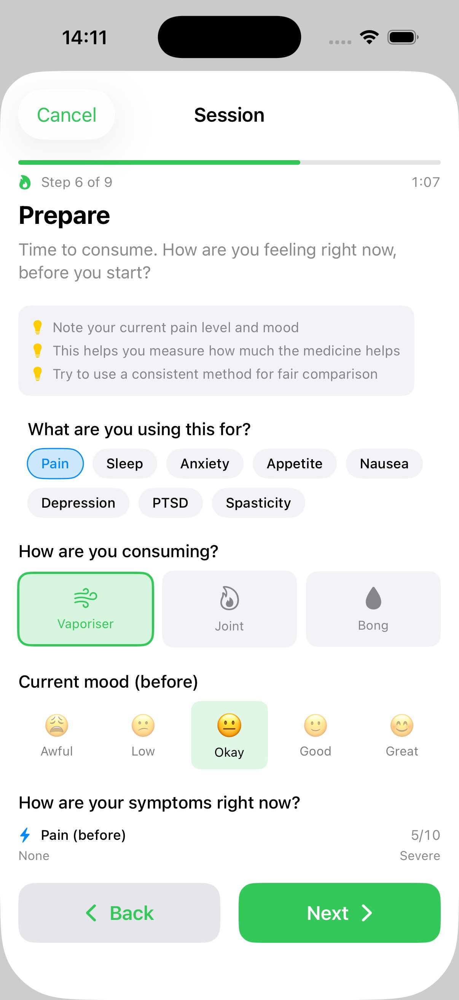
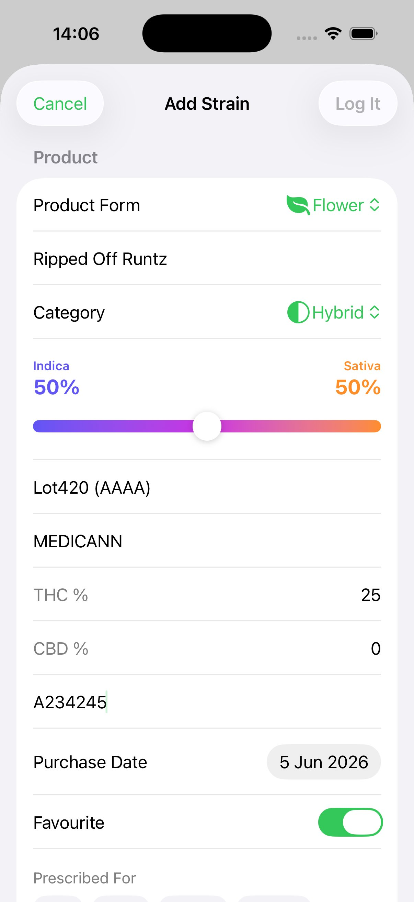
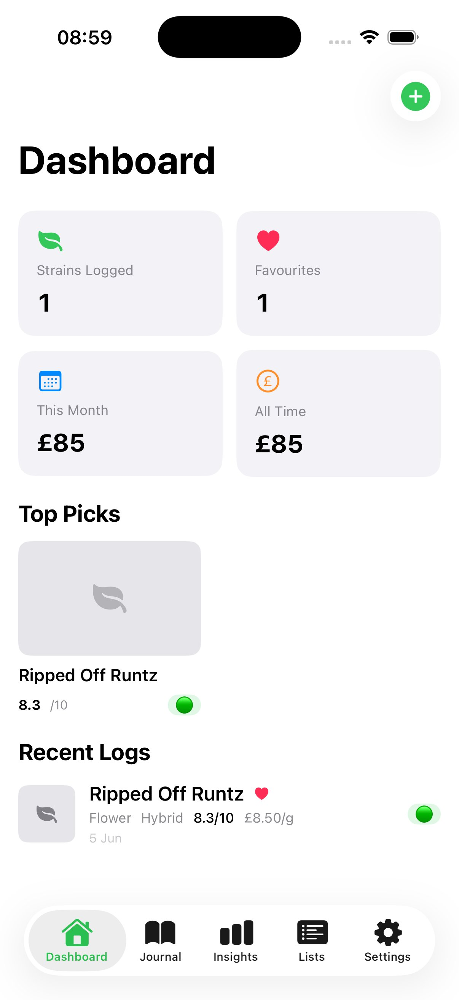
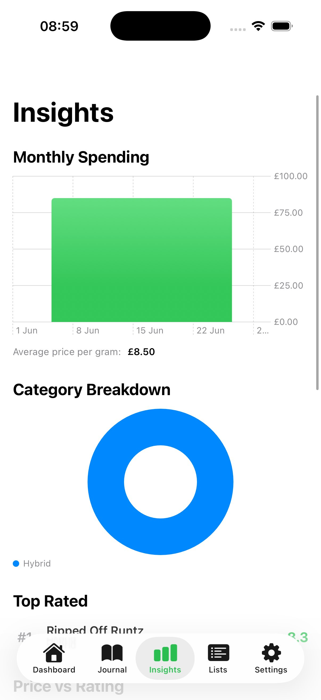
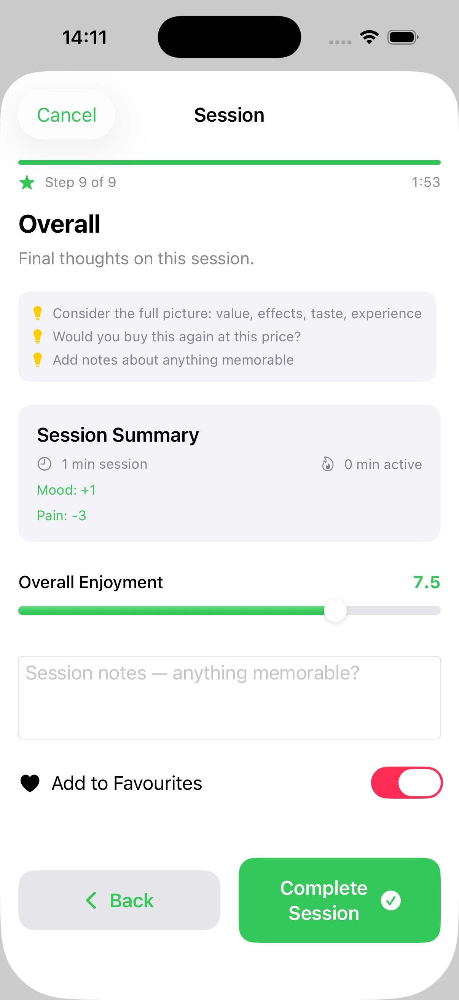
Features
Built by a UK medical cannabis patient who got tired of keeping notes in a phone app and forgetting which strains were worth reordering.
A 9-step walkthrough that guides you through evaluating a strain properly — from product details and photos through smell, inspect, prepare, taste, effects, and overall verdict. Tracks symptoms before and after with live change summaries.
Flower, oil, vape, pastilles, rosin/extracts, and hash — each with tailored fields. Oils and pastilles track concentration (mg/ml or mg/unit). Consumption methods filter automatically by product type.
Auto-categorises every strain into Definite Rebuy, Budget Pick, Needs Investigation, or Never Again — using cost per mg of THC for true value analysis. Fully configurable thresholds with transparent reasoning.
Cost per mg of THC across all product forms, best/worst value cards, cost efficiency vs rating scatter plots, dispensary comparisons, and category breakdowns — powered by Swift Charts.
Rate symptom severity before and after each session with dynamic scales tailored to your condition — Pain (None→Severe), Sleep (Poor→Great), Anxiety (Calm→Severe). See live improvement summaries.
Dedicated favourites view grouped by product form with summary stats. Wishlist tracks strains you want to try — with priority stars, source notes, and one-tap "mark as purchased" when you order.
Start a T-Break with preset or custom durations. Circular progress ring, daily mood check-ins with emoji picker, symptom tracking, mood trend visualisation, and break history with completion badges.
Log dominant terpenes with scent hints — Myrcene, Limonene, Caryophyllene, Pinene, Linalool, Humulene, Terpinolene. Analytics correlate which profiles you respond best to.
Create curated shareable lists. Auto-generated lists by verdict. Export as branded PDFs or share via iMessage, WhatsApp, AirDrop. Prices hidden by default for privacy.
Guided Session
Nine steps that walk you through rating a strain the right way — with a session timer, symptom tracking before and after, and a verdict overlay when you save.
Product form, strain name, category with hybrid split slider, THC/CBD %, breeder, dispensary, batch number.
Price per unit (g/ml/unit depending on form), quantity, purchase date. Total calculated automatically.
Take or choose a photo of the product to build your visual strain library.
Rate the aroma 0–10 and identify terpenes with scent hints. Available for flower, hash, and rosin.
Rate looks 0–10 with a visual quality checklist — trichomes, colour, trim, seeds, mould detection.
Select what it's prescribed for, consumption method (auto-filtered by form), pre-consumption mood and symptom severity ratings.
Rate taste and effects, onset time, post-consumption mood and symptoms. Live before/after comparison shows improvement or worsening.
Duration, dominant effects tags (Relaxing, Uplifting, Pain Relief…), and side effects tags (Dry Mouth, Red Eyes…).
Session summary with duration, mood change, symptom changes. Overall enjoyment rating, notes, favourite toggle. Verdict overlay on save.
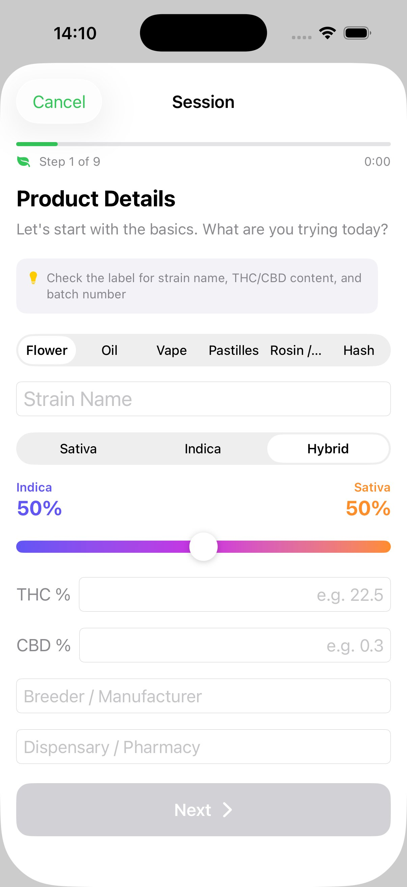
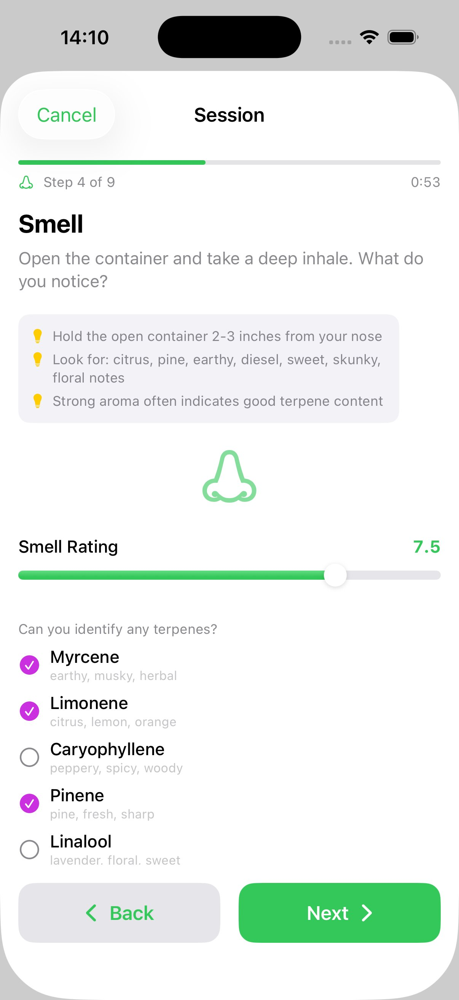
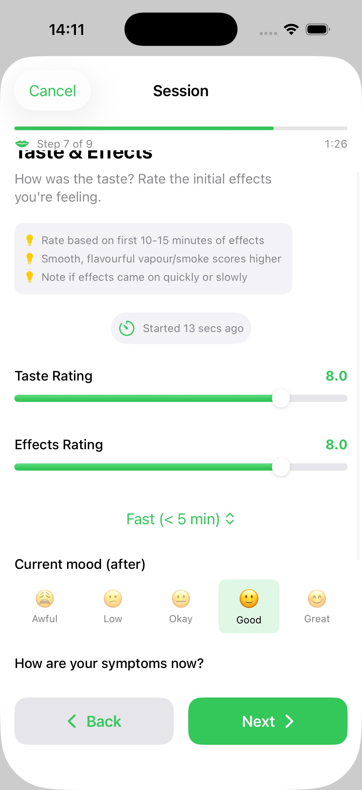
Strain Logging
Whether you use the guided session or quick-add, every product gets a comprehensive entry — strain name, breeder, dispensary, batch number, THC/CBD percentages, pricing, terpene profiles, ratings, effects, and symptom tracking. Fields adapt automatically based on product form.
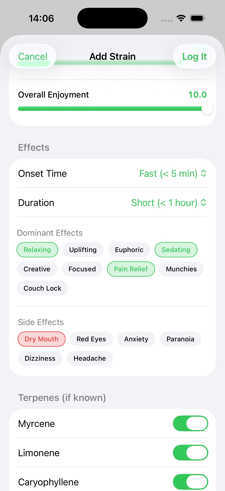
Analytics
Monthly spending charts, THC value for money rankings (cost per mg of THC across all product forms), cost efficiency vs rating scatter plots, category breakdowns, dispensary comparisons, effects heatmaps in top strains, and rating distributions. Every chart is built with Swift Charts.
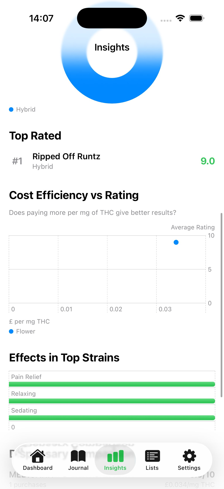
Smart Verdicts
Every strain gets an automatic verdict based on your ratings and true THC value (cost per mg). The logic is fully configurable — adjust thresholds, set your "good value per gram" and typical THC %, weight price sensitivity, prioritise effects over bag appeal, or disable ratings you don't care about. User-friendly sliders auto-calculate the cost-per-mg-THC budget threshold behind the scenes.
High ratings above your configurable threshold. Worth every penny. Get this on your next script.
Decent quality at good THC value. Uses cost per mg to find genuine bargains across product forms.
Not enough data or falls between thresholds. Could be a bad batch — worth trying again before writing off.
Scores below your minimum threshold. Save your money and avoid next time.
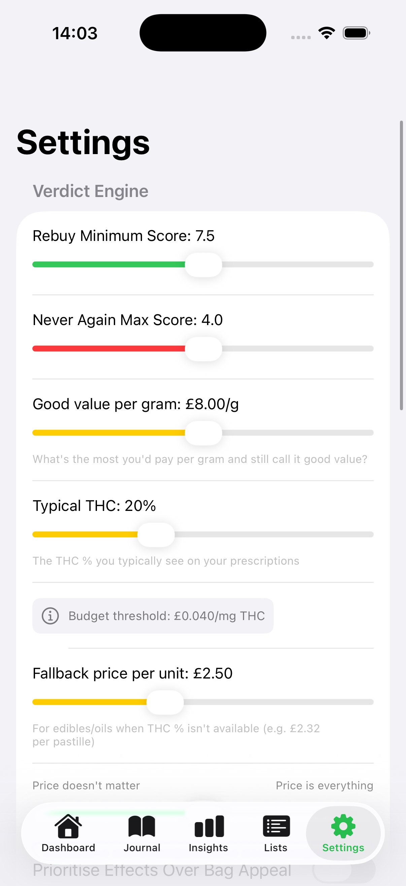
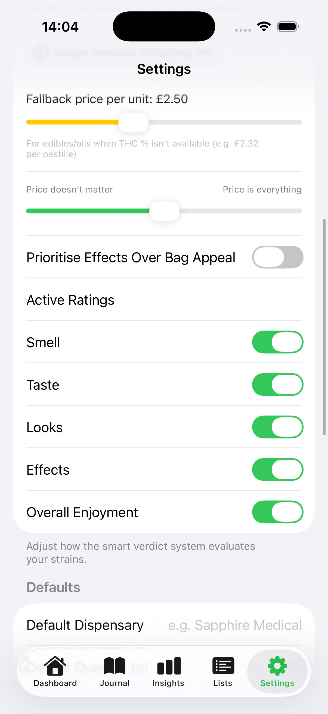
Configurable verdict thresholds, good-value-per-gram slider, typical THC %, price sensitivity, and active rating toggles
Dashboard
Stat cards for strains logged, favourites, this month's spend, and all-time spend. Quick links to your Favourites, Wishlist, and Tolerance Break tracker — with active T-Break progress shown inline. A Top Picks carousel shows your highest-rated strains, and Recent Logs gives you the last 5 entries at a glance.
New users get a clean welcome with two prominent options: start a Guided Session for the full experience, or Quick Add for faster logging.
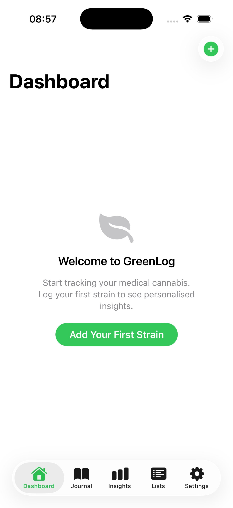
Onboarding
A four-page swipeable tutorial introduces every core concept on first launch — what GreenLog does, how product forms and ratings work, how the smart verdict system evaluates your strains, and the full feature set including analytics, wishlist, and tolerance breaks. Skip or walk through at your own pace.
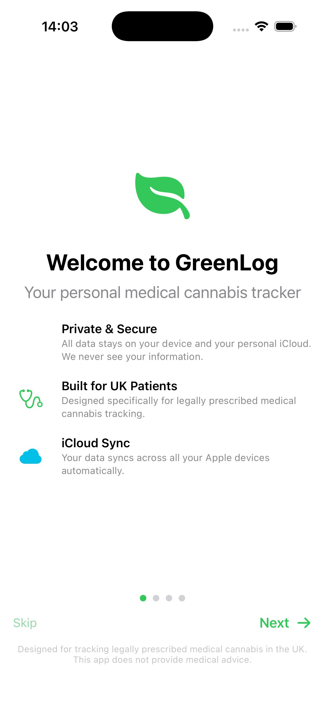
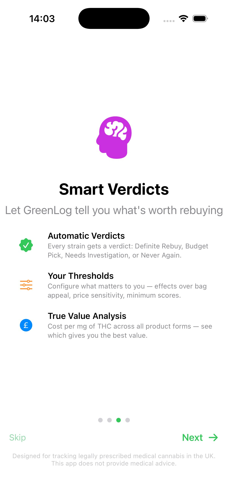
Privacy First
All data lives locally on your iPhone using SwiftData. Nothing is uploaded to external servers. No account required.
Sync across all your Apple devices via your personal iCloud account with CloudKit. Your data never touches our servers.
Export everything as CSV at any time. Your data is never locked in. Delete it all with one tap if you want.
Beta Programme
We're looking for UK medical cannabis patients to test GreenLog via TestFlight and share honest feedback. The app is free and your data stays completely private.
Opens a Reddit DM to u/Legitimate_Visual441